70% Size, 100% Accuracy: Lossless LLM Compression for Efficient GPU Inference via Dynamic-Length Float (DFloat11)
摘要
大规模 AI 模型（如大语言模型 LLM 与扩散模型 DM）规模迅速增长，使其在资源受限硬件上的高效部署面临巨大挑战。 本文提出 Dynamic-Length Float（DFloat11），一种无损压缩框架，可在保持输出与原模型逐位一致的前提下，将 LLM 与 DM 的规模缩小 30%。 DFloat11 的动机来自 LLM 的 BFloat16 权重表示中存在的低熵，这揭示了现有存储格式的显著低效。 通过熵编码，DFloat11 按频率为权重分配可变长度编码，在不损失精度的情况下实现接近信息最优的压缩。
为支持动态长度编码的高效推理，我们设计了用于快速在线解压的定制 GPU 核函数。 我们的设计包含以下三点：
- 能放入 GPU SRAM 的紧凑分层查找表（LUT），用于高效解码。
- 使用轻量辅助变量协调线程读写位置的两阶段 GPU kernel。
- 以 Transformer block 为粒度的解压以降低延迟。
在 Llama 3.3、Qwen 3、Mistral 3、FLUX.1 等模型上的实验验证：DFloat11 在保持逐位一致输出的同时，实现约 30% 的模型规模缩减。 与一种可能的替代方案（将未压缩模型的一部分卸载到 CPU 以满足显存限制）相比，DFloat11 在 token 生成吞吐上可提升 2.3–46.2 倍。 在固定 GPU 显存预算下，DFloat11 可支持比未压缩模型长 5.7–14.9 倍的生成长度。 值得注意的是，该方法使得在单节点（8×80GB GPU）上对 Llama 3.1 405B（810GB）实现无损推理成为可能。
引言
基础模型（如 LLM 与 DM）在自然语言处理（NLP）[1] 与计算机视觉（CV）任务[2] 上展现了强大的能力。 然而，其庞大模型规模给高效部署带来巨大障碍，尤其是在内存受限环境中。 例如，一个具有竞争力的最新 LLM——Llama 3.1 405B[3]——拥有 4050 亿个参数，采用 16 位 BFloat16 格式存储，完整推理约需 810GB 显存，超出典型高端 GPU 服务器（如 8×80GB 的 DGX A100/H100）的容量。 因此部署该模型往往需要多节点，成本高且难以普及。 本文提出一种解决方案：将任意 BFloat16 模型压缩到约 70% 体积，同时在任何任务上保持 100% 精度。
通过量化进行模型压缩存在局限。 量化是一种有损压缩方法，将权重转换为更低比特宽度的表示[4], [5], [6], [7]。 尽管它能显著降低内存占用并常常提升推理速度，但量化并非放之四海皆准，存在多个关键局限。 1. 精度下降。 量化在设计上会引入近似误差。 精度损失的程度取决于基础模型、量化方法、评测基准与目标比特宽度等多种因素[8]。 这些因素的相互作用使影响难以预测或量化。 即便是轻度量化，也可能产生显著性能下降。 例如，将 8-bit SmoothQuant[9] 应用于 DeepSeek-R1-Distill-Qwen-1.5B[10]，会在推理任务上带来 9.09% 的平均精度下降[11]。 2. 行为偏移。 即便总体精度指标看似变化不大，量化模型的行为也可能与全精度模型不同。 例如 Dutta 等人[12] 发现一种称为 flips 的现象：量化模型会将答案从正确翻转为错误，或反之。 这表明即便标准精度指标几乎不变，量化也可能显著改变模型行为。 比如，W8A16 GPTQ 量化的 Qwen2-1.5B[4], [13] 在 GSM8K（8-shot）上仅下降 0.3%[14]，但其答案正确性翻转比例高达 6.37%[12]。 3. 合规与可靠性风险。 在金融或医疗等领域，量化模型的输出可能无法满足监管或可靠性要求，因为其结果与原模型并不一致[15]。 我们在附录 小节 8.1 中对量化问题进行更深入讨论。
现有无损模型压缩无法支持高效 GPU 推理。 与有损压缩不同，无损压缩在保留权重全精度的同时减少模型规模。 这使得模型输出分布与未压缩模型保持一致。 然而，现有无损方法多聚焦于存储效率（如压缩模型检查点[16], [17]），或面向 FPGA 等专用硬件[18]，而非在通用 GPU 上加速推理。 这些方法虽可用于训练过程中的检查点回滚[19] 或减少模型下载时间[17]，但对 GPU 推理几乎没有帮助。
我们提出 Dynamic-Length Float (DFloat11)，一种为高效 GPU 推理优化的无损压缩框架。 我们发现 BFloat16 的一个关键低效：其 8 位指数域仅携带约 2.6 位的实际信息量。 该冗余在多种 LLM 中普遍存在，如 小节 3.2 所示。 为利用这一点，我们对 BFloat16 权重的指数位应用 Huffman 编码[20]，而符号位与尾数位保持不压缩。 得到的指数使用动态长度编码：常见值分配短码，稀有值分配长码。 然而，标准 Huffman 解码依赖按位遍历树结构，GPU 上并行度低且效率差。 为每个解压任务分配一个 GPU 线程会导致严重的硬件闲置与高延迟。 为克服这些问题，我们设计了一种面向硬件的算法，支持 GPU 上高效的动态长度浮点在线解压。 我们的方案包含三项核心组件： 1. 使用可放入 GPU SRAM 的紧凑查找表实现快速查表式 Huffman 解码。 2. 采用两阶段 kernel 设计，以轻量辅助变量协调所有线程的读写操作。 3. 在 Transformer block 级别进行批量解压以最大化吞吐。
我们总结贡献如下：
- 提出 Dynamic-Length Float（DFloat11），一种无损压缩浮点格式，将 BFloat16 权重压缩到约 11 位，实现约 30% 的模型体积缩减，并保持逐位一致输出。
- 设计硬件感知的优化算法，利用 GPU 内存与计算层次结构，实现 DFloat11 压缩模型的高效推理。
- 在 Llama 3、Qwen 3、Mistral 3、DeepSeek R1 Distilled、FLUX.1 与 Stable Diffusion 3.5 等模型上评估 DFloat11[3], [10], [21], [22], [23], [24]。 结果显示，该方法在所有模型上都能实现约 30% 的压缩且输出完全不变。 尤其值得注意的是，它让 Llama-3.1-405B 在单节点（8×80GB A100 GPU）上运行成为可能，硬件需求减半且精度不损失。
方法
本节介绍我们提出的浮点格式 Dynamic-Length Float（DFloat11），以及为高效 GPU 推理设计的解压 kernel。
预备知识
Brain Float（BFloat16）
当前最先进的 LLM 主要使用 16 位 Brain Float（BFloat16 或 BF16）来存储权重，因其在数值精度与内存效率之间取得平衡。 BF16 将 16 位分配为：1 位符号、8 位指数、7 位尾数。 BF16 数值的计算公式为：
\[ (-1)^{\text{sign}} \times 2^{\text{exponent} - 127} \times (1.\text{mantissa}). \tag{1}\]
其中 \(\mathrm{mantissa}\) 被解释为二进制小数。
熵编码
熵编码是无损数据压缩的核心技术，利用统计冗余来缩减数据规模。 常见方法包括 Huffman 编码[20]、算术编码[25] 与不对称数系统（ANS）[26]。 其中 Huffman 编码最为常用，它通过可变长度编码最小化编码结果大小。 它为更常见的符号分配更短的二进制码，为稀有符号分配更长的码。 解码依赖前缀无歧义的 Huffman 树。 由于 Huffman 码具有前缀无歧义性质，任何码字都不是另一码字的前缀，从而无需分隔符即可唯一解码。 该树基于符号频率构建，并在给定频率分布下可证明是最优的。 然而，由于其本质上是顺序解码，难以在大规模并行环境下高效解码。
GPU 计算与内存范式
GPU 被设计用于大规模并行计算。 现代 GPU 由成千上万线程组成，这些线程被组织成线程块并运行在流式多处理器（SM）上。 每个线程块可以访问片上小而快的共享内存（通常称为 SRAM），其延迟远低于片外的全局内存（HBM）。 共享内存容量有限，通常每个线程块不超过 100KB。 本文利用 SRAM 的快速访问特性，实现推理过程中的在线解压。
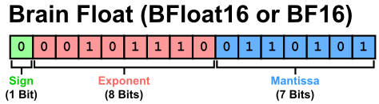
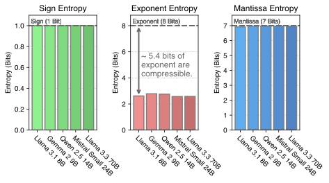
动机：BFloat16 表示在信息上低效
为说明对 LLM 权重进行无损压缩的必要性，我们分析近期 LLM 的 BFloat16 权重可压缩性。 具体而言，我们使用香农熵度量 LLM 所有线性投影矩阵中 BFloat16 各组成部分（符号、指数、尾数）的信息量。 香农熵 \(H(\cdot)\) 定义为：
\[ H(X) = -\sum_{x \in \mathcal{X}} p(x) \log_2 p(x). \tag{2}\]
其中 \(X\) 是取值空间为 \(\mathcal{X}\) 的离散随机变量，\(p: \mathcal{X} \to [0,1]\) 为其概率质量函数。 我们在图 图 2 中展示了计算得到的熵值。 可以看到，符号位与尾数位的熵接近各自位宽，表明压缩潜力有限。 相比之下，指数位熵显著更低，约为 2.6 位，而其分配位宽为 8 位，显示出巨大无损压缩潜力。
为理解这一差异，我们在附录中可视化了所有 BFloat16 组成部分的频率分布（图 图 10），以及指数值的排序频率（图 图 11）。 符号与尾数在各自范围内分布相对均匀，而指数分布高度不均衡：256 个 8-bit 值中仅约 40 个会出现，其余从未出现。 排序频率也快速衰减。 这些观察揭示了指数的低熵及其可压缩性。
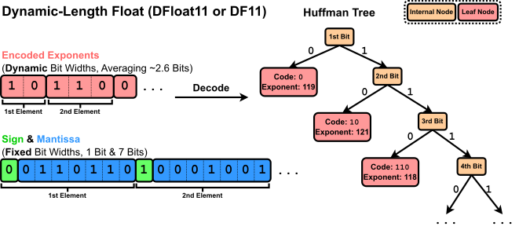
Dynamic-Length Float：面向高效 GPU 推理的无损 LLM 压缩
为解决 BFloat16 权重表示的显著信息低效，我们提出一种基于熵编码的无损压缩框架，用于编码浮点参数。 具体来说，我们根据模型权重中指数的分布构建 Huffman 树。 然后对指数进行 Huffman 编码，而符号与尾数保持原样。 指数被编码并紧密打包进字节数组 \(\mathsf{EncodedExponent}\)，而符号与尾数保存在另一个字节数组 \(\mathsf{PackedSignMantissa}\) 中。 图 图 3 展示了 DFloat11（DF11）格式，用于紧凑表示 BFloat16 模型参数。
核心挑战：使用压缩权重实现高效 GPU 推理
尽管 DFloat11 实现了无损压缩，但高效 GPU 推理仍是关键挑战。 熵编码后的权重使用可变长度编码，无法直接参与矩阵乘法。 因此，每个权重矩阵必须在使用前在线解压回 BFloat16，完成计算后立即丢弃以节省显存。 然而，传统 Huffman 解码本质上是顺序的，需要对每个元素逐位遍历树结构，难以适配 GPU 并行架构。 简单地为每个权重分配一个线程进行解压会导致低利用率与高延迟。 解决这一瓶颈是可用压缩推理的关键。
在接下来的段落中，我们详细介绍我们的解决方案：一组面向硬件的算法设计，用于在大规模并行环境下进行低延迟解码。 我们的方案包括三项关键组件： 1. 使用可放入 GPU SRAM 的紧凑查找表进行基于查表的高效解码。 2. 通过轻量辅助变量引入两阶段 kernel 以协调所有线程的读写。 3. 在 Transformer block 级别进行解压以降低延迟。
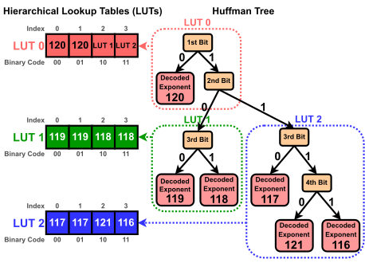
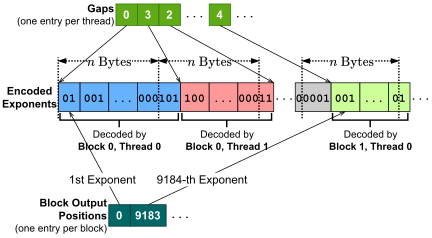
使用分层查找表实现高效解码
传统 Huffman 解码需要逐位读取编码流并沿树遍历。 然而，这种方法在 GPU 上效率低下，原因是分支频繁且并行性不足。 为实现高效解码，我们采用基于查找表的方法[27]。
设 Huffman 码的最大长度为 \(L\)，我们构建大小为 \(2^L\) 的查找表 \(\mathsf{LUT}\)。 在每个索引 \(i\) 处，\(\mathsf{LUT}\) 存储与 \(i\) 的二进制表示前缀匹配的解码指数。 为解码下一个指数，我们从编码流中读取接下来的 \(L\) 位，将其解释为 \(\mathsf{LUT}\) 的索引，并取出对应的值。 为了确定在流中前进多少位，我们使用辅助表 \(\mathsf{CodeLengths}\)，其将每个指数映射到对应 Huffman 码长。 该解码过程的详细示例见附录 小节 8.9。
在实际中，\(L\) 可能很大。 对 LLM 而言，\(L\) 通常在 24 到 32 之间，对应的 \(\mathsf{LUT}\) 规模可达 \(2^{32}\)，无法放入 GPU SRAM。 为此，我们将单一 \(\mathsf{LUT}\) 分解为一层层紧凑的查找表[27]。 具体地，我们将 Huffman 树划分为高度为 8 的若干不重叠子树。 每个子树对应一个可解码 8 位的紧凑 LUT，仅需 \(2^8=256\) 个条目。
图 图 4 给出了一个高度为 4 的 Huffman 树如何分解为多个紧凑 LUT 的示例。 由于分层组织，某些条目需要作为指向下层 LUT 的引用。 我们利用 8 位指数值的稀疏性：虽然理论上有 256 个值，但在 LLM 中通常仅使用约 40 个（见附录图 图 11）。 因此我们将未使用的值（具体为 240–255）复用为指向其他 LUT 的指针。 这些值对应极大数值（\(\pm 2^{113}\) 至 \(\pm 2^{128}\)），在 LLM 权重中不会出现，因此可安全作为内部标记。
我们用 \(k\) 表示紧凑 LUT 的数量。 在实验中，基于 BFloat16 指数构建的 Huffman 树对应的 \(k\) 通常在 4 到 8 之间。 这些 LUT 与 \(\mathsf{CodeLengths}\) 合计最多占用 \((8+1)\times256\) 字节，能够轻松放入 SRAM 并支持快速重复查表。
两阶段 kernel 与轻量辅助变量
为利用 GPU 的并行能力，我们为每个线程分配一段连续且互不重叠的指数编码块，长度为 \(n\) 字节（实验中 \(n=8\)）。 每个线程解码其块内 Huffman 码起始于该块范围内的元素。 由于 Huffman 码是可变长度的，线程需要先跳过若干比特才能找到第一个元素。 同样，最后一个元素可能跨越该块的末端。
该方法带来两个关键挑战： 1. 由于码长可变，每个线程的起始比特位置并不明确。 2. 除首线程外，解码元素的索引未知，因而难以确定正确的输出位置。
为解决第一个问题，我们使用 gap 数组[27] 指定每个线程的起始比特偏移。 数组 \(\mathsf{Gaps}\) 为每个线程提供一个偏移值，表示相对于该线程起始字节的第一个有效 Huffman 码偏移。 由于最大码长为 32 位，偏移范围为 \([0,31]\)，仅需 5 位存储。
对于第二个问题，若为每个线程维护输出位置，内存开销过大。 每个位置需要 32 位整数，而每个矩阵可能包含数万线程，会显著抵消 DFloat11 的压缩收益。 为降低开销，我们只保存每个线程块第一个元素的输出位置，而不是每个线程都保存。 由于每个线程块通常包含数百到数千线程，这一优化将开销从“每线程一个 32 位整数”降为“每块一个”，使内存成本可忽略。 图 图 5 展示了 gap 与 block-level output position 数组如何编码与指数编码相关的元数据。
为支持该设计，我们实现了两阶段 kernel。 在第一阶段，每个线程解码其分配块并统计元素数量，但不向 HBM 写入。 随后，同一线程块内的线程同步，对元素计数做前缀和以计算每线程输出位置。 该步骤使用 Blelloch 算法[28]。 在第二阶段，每个线程再次解码同一块，并将结果写入 SRAM 的写缓冲区中对应位置。 为避免冗余的全局内存访问，指数编码在第一阶段前被加载进 SRAM。 当所有解码值写入 SRAM 后，再一次性合并写回 HBM。 两阶段 kernel 的伪代码见附录“算法 1”。
Transformer block 级别解压
至此，我们给出了在大规模并行环境下解压熵编码指数的完整方案。 推理时，DFloat11 格式的权重以及辅助变量（线程级 gap 数组与块级输出位置数组）都保存在 GPU 内存中。 当需要进行矩阵乘法时，权重矩阵会在线解压成 BFloat16 格式。 矩阵乘法完成后，该 BFloat16 矩阵立即丢弃以节省显存。
在实践中，单个权重矩阵的解压往往难以充分利用 GPU 资源。 矩阵越大，解压吞吐越高。 图 图 9 展示了 DFloat11 解压随矩阵规模增长的趋势。 为提高吞吐并隐藏延迟，我们提出将多个矩阵的解压合并为批次。 具体而言，我们以 Transformer block 为单位，对其中的所有 DFloat11 权重矩阵进行一次批量解压。 该批量解压发生在 Transformer block 前向计算之前。 我们也压缩 token embedding 与语言模型输出头。 由于这些矩阵足够大以饱和 GPU 资源，因此不需要批量解压。
实验
| 模型 | 原始 \(\rightarrow\) DF11 压缩 | 压缩比 | 平均比特宽度 |
|---|---|---|---|
| Large Language Models | |||
| Llama 3.1 8B Instruct | 16.06 GB \(\rightarrow\) 10.90 GB | 67.84% | 10.85 |
| Llama 3.3 70B Instruct | 141.11 GB \(\rightarrow\) 95.40 GB | 67.61% | 10.82 |
| Llama 3.1 405B Instruct | 811.71 GB \(\rightarrow\) 551.22 GB | 67.91% | 10.87 |
| Qwen 3 14B | 29.54 GB \(\rightarrow\) 20.14 GB | 68.17% | 10.91 |
| QwQ 32B | 65.53 GB \(\rightarrow\) 44.65 GB | 68.14% | 10.90 |
| Mistral Nemo Instruct | 24.50 GB \(\rightarrow\) 16.59 GB | 67.74% | 10.84 |
| Mistral Small 3 | 47.14 GB \(\rightarrow\) 31.86 GB | 67.58% | 10.81 |
| Phi 4 Reasoning Plus | 29.32 GB \(\rightarrow\) 19.83 GB | 67.64% | 10.82 |
| DeepSeek R1 Distill Llama 8B | 16.06 GB \(\rightarrow\) 10.89 GB | 67.81% | 10.85 |
| Diffusion Transformers | |||
| FLUX.1 dev | 23.80 GB \(\rightarrow\) 16.33 GB | 68.61% | 10.98 |
| FLUX.1 schnell | 23.78 GB \(\rightarrow\) 16.31 GB | 68.58% | 10.97 |
| Stable Diffusion 3.5 Large | 16.29 GB \(\rightarrow\) 11.33 GB | 69.52% | 11.12 |
| 模型 | 数据类型 | MMLU | TruthfulQA | WikiText | C4 |
|---|---|---|---|---|---|
| Llama 3.1 8B Instruct | BF16 | 68.010 \(\pm\) 0.375 | 36.965 \(\pm\) 1.690 | 8.649 | 21.677 |
| Llama 3.1 8B Instruct | DF11（本文） | 68.010 \(\pm\) 0.375 | 36.965 \(\pm\) 1.690 | 8.649 | 21.677 |
| 模型 | 峰值显存 BF16 (GB) | 峰值显存 DF11 (GB) | 生成时间 BF16 (s) | 生成时间 DF11 (s) |
|---|---|---|---|---|
| Stable Diffusion 3.5 Large | 16.44 | 11.78 | 66.36 \(\pm\) 0.13 | 69.08 \(\pm\) 0.11 |
| FLUX.1 dev | 23.15 | 16.72 | 74.41 \(\pm\) 0.15 | 78.53 \(\pm\) 0.18 |
我们评估 DF11 压缩效果以及其 GPU 推理效率。 我们将多种最新 LLM 与 DM 从原始 BFloat16 格式压缩为 DF11，并报告压缩比。 随后，我们在不同 GPU 上对 DF11 压缩模型与未压缩模型进行推理性能对比，并进行消融分析以理解压缩影响。
软件与硬件。 我们用 CUDA 与 C++ 实现 DF11 解压 kernel，并将其集成进 HuggingFace Transformers 推理框架[29]。 我们将 DF11 模型的推理效率与原始 BF16 模型进行对比。 我们使用 HuggingFace Accelerate 以支持 CPU offloading 与多 GPU 推理。 为评估 DF11 kernel 在不同硬件上的性能，我们在多台具有不同 GPU/CPU 配置的机器上开展实验。 所有实验机器的硬件规格见附录表 表 4。
结果
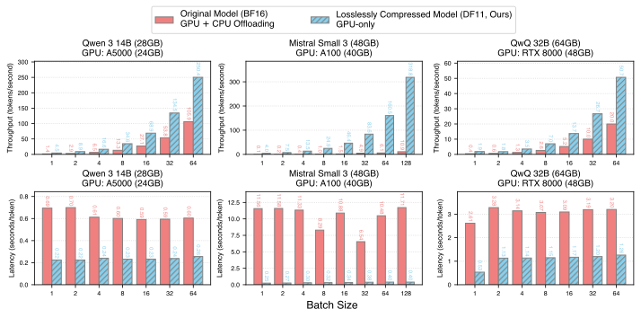
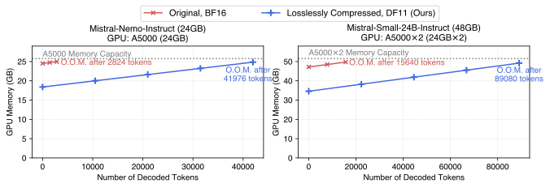
DF11 将模型压缩到 70% 体积。 表 表 1 给出了 DF11 在多种 LLM 与 DM 上的压缩比。 具体而言，我们对 LLM 的所有权重矩阵与 token embedding 进行压缩，对 DM 的 transformer block 中所有权重矩阵进行压缩。 被压缩的模型包括 Llama 3.1/3.3[3]、Qwen 3[13]、Mistral Nemo/Small[22], [30]、Phi 4[31]、DeepSeek R1 Distilled[10]、Stable Diffusion 3.5[24] 与 FLUX.1[23]。 DF11 在所有模型上实现约 70% 压缩，对应有效比特宽度约 11 位。
精度与困惑度评估验证 DF11 无损。 我们在标准基准上对 DF11 的无损性进行评估。 评估使用 lm_evaluation_harness[32]，报告 MMLU[33] 与 TruthfulQA[34] 的精度，以及 WikiText[35] 与 C4[36] 的词级困惑度。 结果见表 表 2。 可以看到，压缩模型在精度与困惑度上与原 BF16 模型完全一致。 我们还在附录 小节 8.10 中给出了 BF16 与 DF11 的 Stable Diffusion 3.5 Large 文生图对比。 在相同随机种子与提示词下，两者生成图像像素级一致。
DF11 在推理效率上优于 CPU offloading。 我们在多种硬件平台上对 DF11 与 BF16 的推理性能进行对比。 由于显存限制，BF16 模型无法完全放入单 GPU，需要部分 CPU offloading，而 DF11 模型可以完全放入 GPU。 为公平比较，我们尽量保留 BF16 模型的 GPU 计算，仅将必要部分卸载到 CPU。 延迟与吞吐在 100-token 预热后测量，然后在空提示词上生成 100 个 token，批大小取不同值。 每组配置运行五次，报告平均结果。 如图 图 6 所示，DF11 在所有场景下均优于 BF16+CPU offloading，延迟降低或吞吐提升 2.31–46.24 倍。 多 GPU 对比见附录图 图 12。
DF11 降低扩散模型显存占用且延迟影响很小。 我们在扩散模型上评估 DF11 压缩的影响，测量 1024×1024 图像的峰值显存与生成延迟（五次平均）。 BF16 与 DF11 都未使用 CPU offloading。 表 表 3 显示，DF11 为 Stable Diffusion 3.5 与 FLUX.1 分别减少 28.3% 与 27.8% 的显存占用。 延迟增加很小：Stable Diffusion 增加 4.1%，FLUX.1 增加 5.5%。
DF11 的显存节省可支持更长的生成长度。 DF11 不仅减少推理所需 GPU 数量，还能在相同显存预算下支持更长生成。 在解码过程中，KV cache 随 token 数量线性增长，很快成为显存瓶颈。 图 图 7 展示了 batch size 1 时 BF16 与 DF11 的显存占用随 token 数量的变化。 DF11 允许在触及显存上限之前多生成 5.70–14.86 倍的 token。
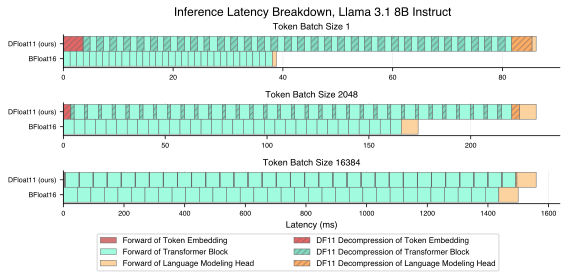
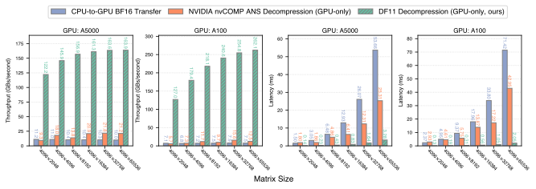
消融研究
延迟分解显示：大批量下解压开销被摊薄。 我们在 A100-40GB 上评估 Llama 3.1 8B Instruct 的 BF16 与 DF11 延迟分解，批大小不同。 每个设置下，我们统计 10 次运行的各组件平均延迟，如图 图 8 所示。 DF11 额外增加了 token embedding、Transformer block 与 LM head 的解压延迟。 该开销为常数，与 batch size 无关，因此 batch size 增大时可被摊薄。
DF11 解压显著快于 CPU→GPU 传输与 nvCOMP ANS。 我们将 DF11 的解压延迟与吞吐与两种基线进行比较：CPU→GPU 权重传输，以及 NVIDIA nvCOMP 的 ANS 解压[26], [37]。 实验使用 Llama 3.1 8B Instruct 的 LM head 切片矩阵。 如图 图 9 所示，DF11 的吞吐最多可比 CPU 传输高 34.95 倍，解压速度最多可比 nvCOMP 快 20.97 倍。 DF11 的压缩率也更高（68% vs. nvCOMP 的 79%）。 此外，随着矩阵规模增大，DF11 解压吞吐提升更明显，得益于 GPU 更高利用率。
结论
我们提出 Dynamic-Length Float（DFloat11），一种面向高效 GPU 推理的无损压缩框架，可用于 BFloat16 模型（包括 LLM 与 DM）。 DFloat11 利用基础模型权重中的信息冗余，通过熵编码的动态长度编码实现接近信息论极限的压缩率。 为实现高效部署，我们设计了硬件感知的算法，使得压缩权重可直接进行高速推理。 大量实验表明，DFloat11 显著降低 LLM 与 DM 的显存需求、支持更长生成长度，并在保持逐位一致精度的同时只引入极小的解压开销。
致谢
本工作得到 NSF SHF-2211815 与 Ken Kennedy Institute Cluster Grants 的支持。 此外，Henry 与 Xia 得到 ITE-2429680、IIS-2310260 与美国交通部（USDOT）Tier-1 University Transportation Center（UTC）Transportation Cybersecurity Center for Advanced Research and Education（CYBER-CARE）项目 #69A3552348332 的支持。 Mohsen 与 Vipin 得到 OAC-2320952、OAC-2112606 与 OAC-2117439 的支持。 本文观点与结论仅代表作者本人，不代表任何资助或支持机构的观点。
附录
讨论：量化是否是通用解？
我们的工作动机之一是理解：对于像 LLM 这样的大规模模型，在保持与原模型 100% 一致输出的前提下进行无损压缩，是否是一条值得深入研究的实践方向。 具体来说，DFloat11 将 LLM 压缩到约 11 位，与常见有损量化技术相比（模型通常被压缩到更低比特宽度，如 8 位或 4 位[4], [5]），其表现如何？
答案远比简单的“是/否”或一刀切的优劣判断更复杂。 例如，一些基准研究（如[43], [44], [45]）常提示 8-bit 量化是一种相对“安全”的压缩方案。 尽管是有损的，8-bit 模型在多种标准基准上仍能保持较强性能。 但我们注意到，这些基准通常聚焦在有限任务集合（如 WikiText2 困惑度、MMLU、常识推理），无法全面反映真实使用场景，尤其是终端用户视角下的表现。
即便如此，“现有基准无法捕捉 8-bit 与 16-bit 模型性能差距”的论点本身也受限于当前基准体系的局限性，因此难以提供大量直接证据。 但已有一些报告开始揭示差距。 例如，LLM Arena 的人类评测1显示，Llama-3.1-405B-Instruct[3] 与其 W8A8 版本（Llama-3.1-405B-Instruct-FP8）之间存在显著差距，尤其是在编码（1293 vs. 1277）与长查询任务（1282 vs. 1275）上。 类似地，将 DeepSeek-R1-Distill-Llama-70B[10] 从 16 位量化到 8 位后，其 GPQA 分数从 9.51% 降到 7.25%，下降 23.7%2。 此外，推理能力对压缩损失尤为敏感。 最新基准[11] 表明，对 DeepSeek-R1-Distill-Qwen-1.5B 使用 8-bit SmoothQuant[9]（涵盖权重、注意力与 KV cache）会在 AIME、MATH-500、GPQA-Diamond 与 LiveCodeBench 等数据集上导致 9.09% 的平均下降（48.82% 降至 44.29%）。 更多关于 8-bit 量化与未压缩模型性能差距的证据见附录 小节 8.8。
虽然“在哪些任务、哪种模型、哪种量化方式、何种条件下会对 FP16/BF16 造成明显下降”的问题仍难以穷尽，但可以认为有损量化为终端用户引入了需额外验证的复杂变量。 为消除这种负担，DFloat11 提供了一个有吸引力的替代方案：在保持与原模型 100% 一致性能的同时，将显存占用降至约 70%，并带来吞吐收益，这对资源受限部署尤为实用。
BFloat16 值的频率分布
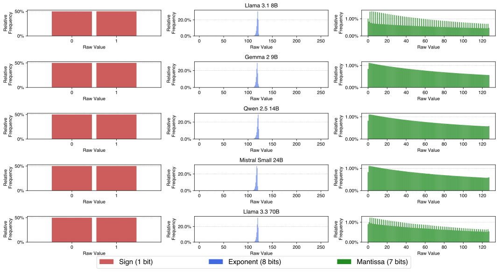
图 图 10 展示了多种 LLM 的 BFloat16 权重中符号、指数与尾数不同取值的频率分布。 图 图 11 展示了 LLM 权重中指数值的排序频率分布。
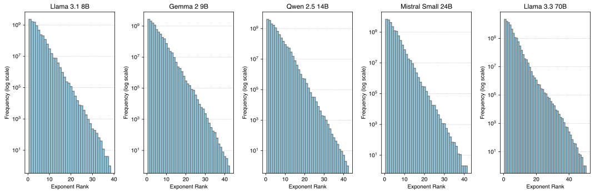
DFloat11 解压 GPU kernel 的伪代码
算法 1 给出了将 DFloat11 解压为 BFloat16 的两阶段 GPU kernel 伪代码。
算法 1：将 DFloat11 解压为 BFloat16 的 GPU kernel
过程 DF11ToBF16
需求：
- EncodedExponent, PackedSignMantissa：字节数组
- LUT_1..LUT_k, CodeLengths：大小为 256 的 8-bit 无符号数组
- Gaps：5-bit 无符号数组（每个线程一个）
- BlockOutputPos：32-bit 无符号数组（每个块一个）
- Outputs：BFloat16 数组
- B, T, n, k：线程块数、线程数、每线程处理字节数、紧凑 LUT 数
将 EncodedExponent 划分为块：
EncodedExponent_1..EncodedExponent_B，每块大小为 nT 字节
对于每个块 b=1..B（块间并行）：
将 EncodedExponent_b 载入 SRAM
将 EncodedExponent_b 划分为：EncodedExponent_{b,1}..EncodedExponent_{b,T}，每块 n 字节
将 LUT_1..LUT_k 与 CodeLengths 载入 SRAM
初始化 NumElements[1..T], ThreadOutputPos[1..T] 为 0
初始化 SRAM 中的 BFloat16 写缓冲 WriteBuffer
对于每个线程 t=1..T（线程间并行）：
Phase 1：确定每线程初始输出位置
BitOffset ← Gaps[bT+t]
while BitOffset < 8n:
读取 EncodedExponent_{b,t} 中从 BitOffset 开始的 4 字节到 Byte_1..4
i ← 1
Exponent ← LUT_1[Byte_i]
while Exponent ≥ 240:
i ← i + 1
Exponent ← LUT_{(257 - Exponent)}[Byte_i]
BitOffset ← BitOffset + CodeLengths[Exponent]
NumElements[t] ← NumElements[t] + 1
线程同步
用 Blelloch 前缀和计算 ThreadOutputPos
ThreadOutputPos[t] ← BlockOutputPos[b] + Σ_{i=1}^{t-1} NumElements[i]
Phase 2：写回解码的 BFloat16
BitOffset ← Gaps[bT+t]
while BitOffset < 8n:
读取 EncodedExponent_{b,t} 中从 BitOffset 开始的 4 字节到 Byte_1..4
i ← 1
Exponent ← LUT_1[Byte_i]
while Exponent ≥ 240:
i ← i + 1
Exponent ← LUT_{(257 - Exponent)}[Byte_i]
Byte ← PackedSignMantissa[ThreadOutputPos[t]]
Sign ← Byte bitwise_and 0b10000000
Mantissa ← Byte bitwise_and 0b01111111
WriteBuffer[ThreadOutputPos[t] - BlockOutputPos[b]] ←
(Sign bitwise_left_shift 8) bitwise_or
(Exponent bitwise_left_shift 7) bitwise_or Mantissa
BitOffset ← BitOffset + CodeLengths[Exponent]
ThreadOutputPos[t] ← ThreadOutputPos[t] + 1
合并写回 HBM：
Outputs[BlockOutputPos[b]..BlockOutputPos[b+1]-1] ←
WriteBuffer[0..(BlockOutputPos[b+1]-BlockOutputPos[b]-1)]| 服务器 | GPU | GPU 显存 | CPU | CPU 内存 |
|---|---|---|---|---|
| Server 1 | NVIDIA RTX A5000 | 24564 MiB | AMD EPYC 7513 32-Core | 504 GB |
| Server 2 | NVIDIA A100 | 40960 MiB | AMD EPYC 7742 64-Core | 1.48 TB |
| Server 3 | NVIDIA Quadro RTX 8000 | 49152 MiB | AMD EPYC 7742 64-Core | 1.48 TB |
实验硬件配置
表 表 4 给出了实验所用服务器的硬件配置。
DFloat11 压缩耗时
| 模型 | 每个 Transformer block 的压缩耗时 (s) |
|---|---|
| Llama 3.1 8B Instruct | 191 |
| Llama 3.3 70B Instruct | 547 |
| Llama 3.1 405B Instruct | 2133 |
表 表 5 报告了不同规模模型压缩单个 Transformer block 的时间。 压缩是一次性的预处理步骤，每个模型只需执行一次，且在单 CPU 线程上完成。 由于不同 Transformer block 的权重存储相互独立，压缩可在多线程并行执行，从而具备良好的可扩展性。
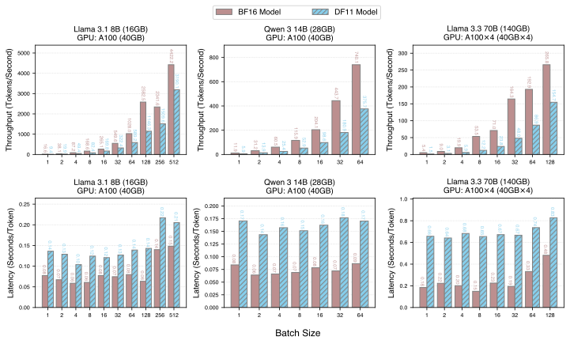
GPU 推理效率对比：BF16 vs. DF11
图 图 12 展示了 BF16 与 DF11 模型在 A100 上、不同模型与 batch size 下的推理效率对比。
| 模型 | 数据类型 | Math | GPQA CoT |
|---|---|---|---|
| Llama-3.1-8B-Instruct | BF16 | 23.92 | 15.18 |
| Llama-3.1-8B-Instruct | INT8 | 19.92 | 14.06 |
| Llama-3.1-8B-Instruct | Δ | 4.0 | 1.12 |
有损量化的影响
表 表 6 给出了原始 Llama 模型与 INT8 量化版本的精度对比。
使用紧凑查找表高效解码 Huffman 码
双查找表方法
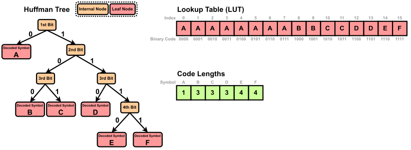
Huffman 解码可以通过遍历 Huffman 树完成：从根开始，编码流的每一位决定一次分支，直到叶节点得到符号。 这种逐位遍历在概念上简单，但在实践中效率低。 因为每次分支依赖前一位，导致频繁的内存访问与条件跳转。 这一模式在 GPU 上尤其低效，会引起分支发散并限制指令级并行。 一种广泛采用的替代方案是基于查找表的解码[27]，将 Huffman 树展平成两张紧凑查找表。 这使得每个符号可通过两次数组查找与一次位移完成解码，显著提升吞吐。
我们使用两张表 \(\mathsf{LUT}\) 与 \(\mathsf{CodeLengths}\)，实现高效且无分支的 Huffman 解码。 设 \(L\) 为 Huffman 码本中最长码字的长度。 我们构建大小为 \(2^L\) 的主查找表 \(\mathsf{LUT}\)，其中每个条目将 \(L\) 位二进制序列映射到其所编码的第一个符号。
图 图 13 给出了 \(L=4\) 的示例，符号集为 \(\texttt{A, B, C, D, E, F}\)。 为清晰起见，我们以字母表示符号，实际对应 BFloat16 指数值。 查找表 \(\mathsf{LUT}\) 含 \(2^4=16\) 个条目，索引为所有可能的 4 位序列。 每个条目存储其前缀匹配的符号。 若符号码长小于 \(L\)，其会占据多个连续条目。 例如，若 \(\texttt{A}\) 编码为 0，则从 0000 到 0111 均以 0 开头，对应条目 0–7 都映射到 \(\texttt{A}\)。 相反，码长为 \(L\) 的符号只占一个条目。 例如 \(\texttt{E}=1110\) 与 \(\texttt{F}=1111\) 分别映射到条目 14 与 15。 这样构造得到稠密前缀表，可用一次查表解码一个符号。
为推进编码流以解码下一个符号，我们还存储每个符号的码长。 第二张查找表 \(\mathsf{CodeLengths}\) 将符号映射到 Huffman 码长。 示例中码长分别为：\(\texttt{A:1, B:3, C:3, D:3, E:4, F:4}\)。 这两张表使得解码过程快速且确定，可重复如下步骤：
- 用编码流的下 \(L\) 位索引 \(\mathsf{LUT}\) 并取出符号。
- 在 \(\mathsf{CodeLengths}\) 中查询该符号的码长，确定要消耗多少位。
- 前移编码流并重复。
该方法消除了分支与指针追踪，特别适合 GPU 并行计算。
将 \(\mathsf{LUT}\) 分解为分层紧凑查找表
主查找表 \(\mathsf{LUT}\) 含 \(2^L\) 个条目，其中 \(L\) 是最长码长。 虽然这可实现常数时间解码，但表规模随 \(L\) 指数增长。 在实践中，基于 BFloat16 指数构建的 Huffman 树中 \(L\) 多为 24–32，表规模达 \(2^{24}\)–\(2^{32}\)，远超 GPU SRAM 容量。 为此，我们将 \(\mathsf{LUT}\) 分解为多个更小的查找表，在片上内存内完成解码。
分层表结构
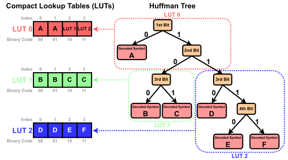
我们将 \(\mathsf{LUT}\) 分解为分层的紧凑查找表。 每个表对应 Huffman 树的一个子树，负责解码 \(b\) 位。 每个表读取接下来 \(b\) 位，并执行以下两种操作之一：
- 直接返回解码出的符号。
- 将解码任务委派给层次中下一张表。
这种分层结构与原 Huffman 树结构一致，但显著降低总内存开销。
图 图 14 示意将 Huffman 树划分为 3 个子树，每张表解码 2 位。 使用这三张 LUT 的解码过程如下：
- \(\mathsf{LUT}_0\)：读取前两位，出现三种情况：
00或01→ 解码为 \(\texttt{A}\)。10→ 转入 \(\mathsf{LUT}_1\)。11→ 转入 \(\mathsf{LUT}_2\)。
- \(\mathsf{LUT}_1\)：读取第 3–4 位：
00或01→ 解码为 \(\texttt{B}\)。10或11→ 解码为 \(\texttt{C}\)。
- \(\mathsf{LUT}_2\)：读取第 3–4 位：
00或01→ 解码为 \(\texttt{D}\)。10→ 解码为 \(\texttt{E}\)。11→ 解码为 \(\texttt{F}\)。
在解码 Huffman 编码的 BFloat16 指数时，我们将 \(\mathsf{LUT}\) 分解为多个紧凑 LUT，每张表解码 8 位（即 \(b=8\)）。 这使得每一步都可读取一个字节并在 256 项数组中查表。 在实践中，\(\mathsf{LUT}\) 分解得到 4–8 张紧凑 LUT，每张 256 项，能够轻松放入 SRAM。
BF16 与 DF11 扩散模型的文生图结果
图 图 15 展示了 Stable Diffusion 3.5 Large 在 BF16 与 DF11 权重格式下生成图像的对比。 在相同提示词与随机种子下，生成结果逐像素一致。
局限性
本文仅关注对 BFloat16 权重的无损压缩。 我们未考虑 FP32、FP16 或 FP8 等其他格式，这些格式可能需要不同的压缩策略。 虽然 DF11 提升了显存效率，但由于解压操作，会引入小但非零的延迟开销。 该开销在大 batch size 下可被摊薄，但可能影响小 batch 的低延迟应用。 我们的评估仅限于 GPU，未评估 CPU、TPU 或定制加速器等其他硬件，它们可能需要平台特定优化。
参考文献
脚注
https://x.com/lmarena_ai/status/1835760196758728898↩︎
https://huggingface.co/RedHatAI/DeepSeek-R1-Distill-Llama-70B-quantized.w8a8↩︎
https://cloud.google.com/blog/products/ai-machine-learning/bfloat16-the-secret-to-high-performance-on-cloud-tpus↩︎
https://github.com/facebook/zstd↩︎
https://github.com/liuliu/s4nnc/pull/11↩︎
https://encode.su/threads/4067-Good-Compressors-for-16-bit-floats↩︎
https://developer.nvidia.com/nvcomp↩︎